| Sample | ||
| of 10 penguins | ||
| pid | species | island |
|---|---|---|
| 220 | Gentoo | Biscoe |
| 141 | Adelie | Dream |
| 261 | Gentoo | Biscoe |
| 313 | Chinstrap | Dream |
| 261 | Gentoo | Biscoe |
| 47 | Adelie | Dream |
| 282 | Chinstrap | Dream |
| 308 | Chinstrap | Dream |
| 9 | Adelie | Torgersen |
| 127 | Adelie | Torgersen |
7: Random Forests
Session 7: Random Forests
Learning objectives:
Deploy many decision trees
Explore ensemble learning:
- bagging
- boosting
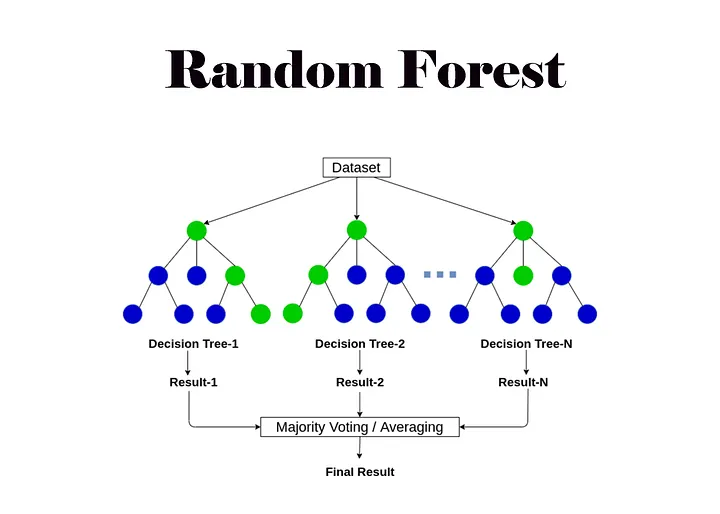
- image credit: Abhishek Jain
NoteOverfitting
When we are improving (by metric) in modeling over the training data and yet are performing worse with the test data, we are probably overfitting the data.
That is, the machine learning is memorizing the training data, but is not generalizing well to new data.
WarningInaccurate Decision Trees
Decision trees
- pro: interpretable
- con: prone to overfitting
Random Forests
NoteRandom Forests
In order to mitigate overfitting, we can deploy a random forest consisting of many decision trees.
- pruning trees (i.e. limit max depth)
- subsets of explanatory variables
WarningDCP1
Bagging
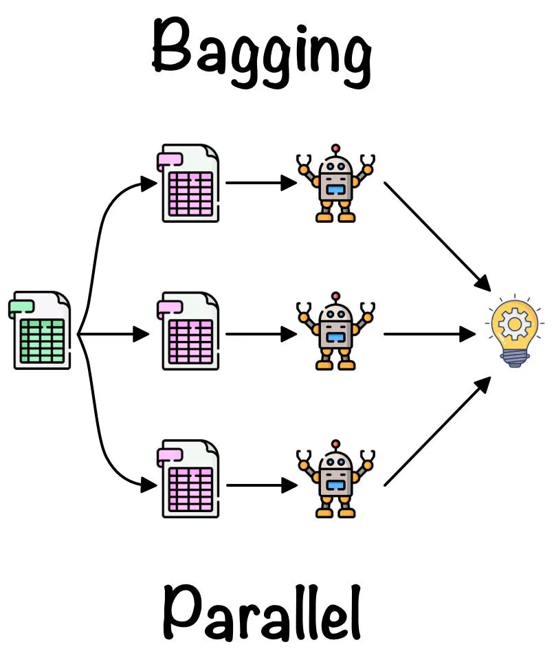
- image source: Roshmita Dey
Bootstrapping
Bootstrapping is performed by resampling with replacement on the data.
| Resample | ||
| of 10 penguins | ||
| pid | species | island |
|---|---|---|
| 127 | Adelie | Torgersen |
| 261 | Gentoo | Biscoe |
| 9 | Adelie | Torgersen |
| 261 | Gentoo | Biscoe |
| 127 | Adelie | Torgersen |
| 313 | Chinstrap | Dream |
| 9 | Adelie | Torgersen |
| 220 | Gentoo | Biscoe |
| 47 | Adelie | Dream |
| 308 | Chinstrap | Dream |
Bags
10 Penguins
In-Bag
| In-Bag | ||
| from 10 penguins | ||
| pid | species | island |
|---|---|---|
| 220 | Gentoo | Biscoe |
| 261 | Gentoo | Biscoe |
| 313 | Chinstrap | Dream |
| 261 | Gentoo | Biscoe |
| 47 | Adelie | Dream |
| 308 | Chinstrap | Dream |
| 9 | Adelie | Torgersen |
| 127 | Adelie | Torgersen |
Out-of-Bag
| Out-of-Bag | ||
| from 10 penguins | ||
| pid | species | island |
|---|---|---|
| 141 | Adelie | Dream |
| 282 | Chinstrap | Dream |
344 Penguins
In-Bag
[1] 3 5 7 9 10 11 12 13 14 15 16 22 23 25 26 28 30 32
[19] 38 41 42 43 47 48 49 51 52 54 55 58 60 63 65 66 68 69
[37] 70 72 73 75 77 79 80 81 83 84 85 86 87 88 91 94 95 97
[55] 98 99 100 101 102 104 105 106 107 108 109 111 112 113 116 117 118 119
[73] 121 122 125 127 128 129 130 131 132 133 134 138 139 140 141 142 143 146
[91] 150 152 153 155 156 157 158 159 162 167 168 169 170 173 174 175 177 179
[109] 181 182 183 184 185 186 187 189 192 193 196 199 200 201 202 203 204 206
[127] 207 208 209 210 211 212 213 215 216 217 219 220 221 223 225 226 227 228
[145] 229 231 233 235 236 237 238 239 240 241 242 243 244 246 247 250 251 252
[163] 253 254 255 258 259 260 261 262 263 265 267 269 270 271 272 273 274 275
[181] 277 278 282 283 284 285 286 287 288 289 292 294 295 296 297 298 300 301
[199] 302 303 305 306 307 308 309 310 311 313 314 317 318 319 320 323 324 326
[217] 327 328 329 330 331 332 333 334 335 337 338 339 340 343 344Out-of-Bag
[1] 1 2 4 6 8 17 18 19 20 21 24 27 29 31 33 34 35 36
[19] 37 39 40 44 45 46 50 53 56 57 59 61 62 64 67 71 74 76
[37] 78 82 89 90 92 93 96 103 110 114 115 120 123 124 126 135 136 137
[55] 144 145 147 148 149 151 154 160 161 163 164 165 166 171 172 176 178 180
[73] 188 190 191 194 195 197 198 205 214 218 222 224 230 232 234 245 248 249
[91] 256 257 264 266 268 276 279 280 281 290 291 293 299 304 312 315 316 321
[109] 322 325 336 341 342
TipBagging
Decision trees
Bagging is using the notion of bootstrapping to aggregate the data.
In general, about 1/3 of the data falls into the out-of-bag category
For each resampling, we can create a decision tree with the in-bag sample
We can use the out-of-bag data as a testing set
- out-of-bag error (OOB error)
NoteEnsemble Reconstruction
- For classification tasks, after making a random forest (say, 1000 trees), class labels are assigned by the majority of predictions.
- For regression tasks, we can average the prediction results from the trees
TipVariable Importance
Since we have created many trees—each choice order determined by entropy—we can create a list of variable importance by reporting which explanatory variables appeared in a higher proportion of trees. This could aid in variable selection and interpretability.
WarningDCP2
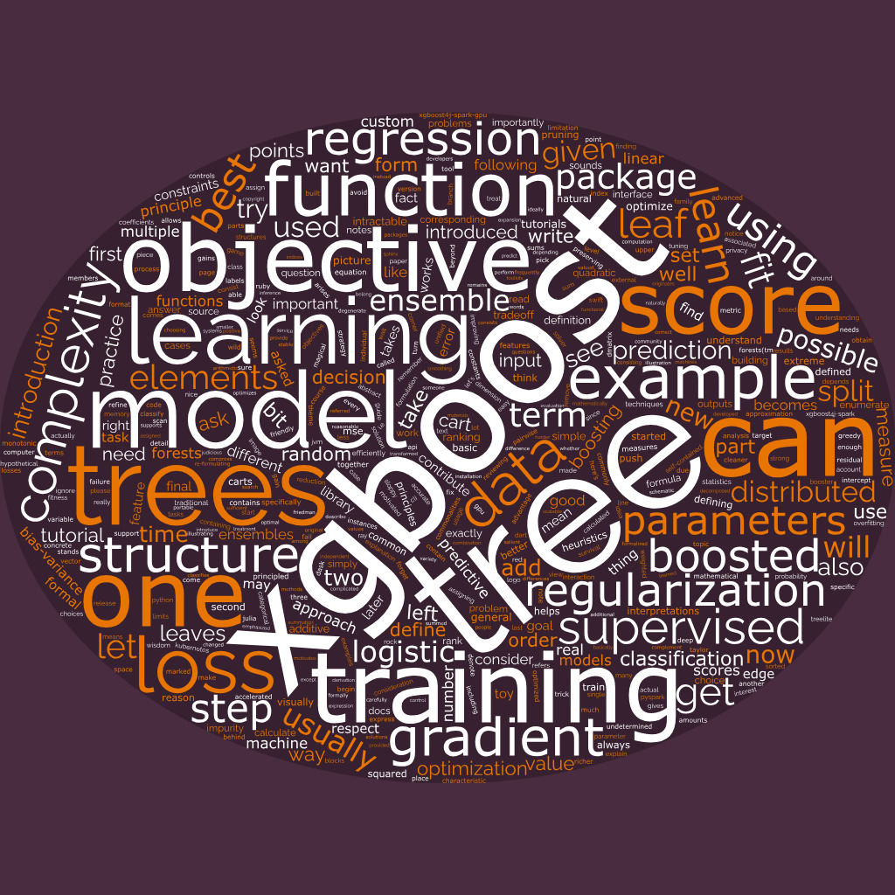
Boosting
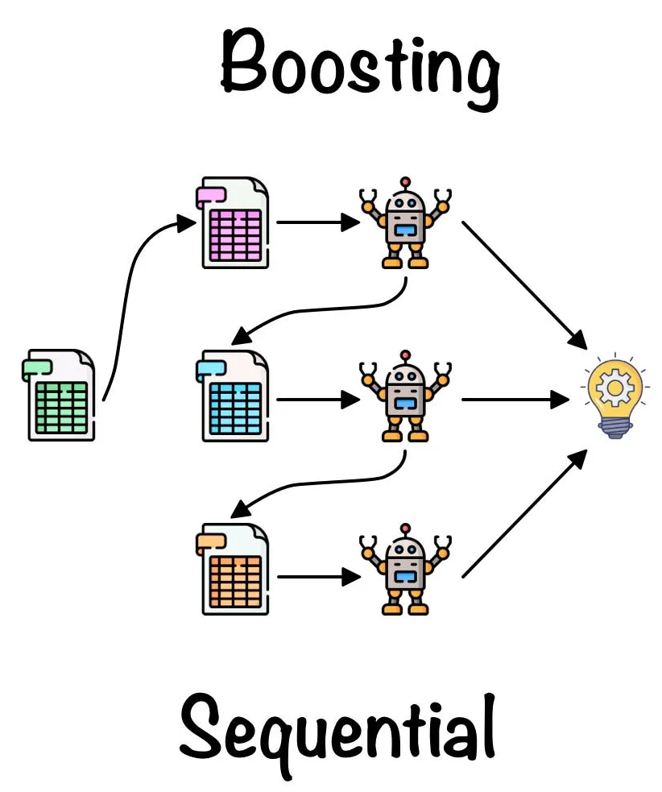
- image source: Roshmita Dey
NoteBoosting
For tree models, boosting resamples underrepresented data and applies larger weights to aim toward stratified sampling.
Stratified Samples
For stratified sampling, subsets maintain proportions of categorical data.
For example, 88 percent of people are right-handed. We assume population proportions
\[p = 0.88, \quad 1 - p = 0.12\]
If we employ a training-testing split, each should also have approximately 12 percent representation for left-handed people.
Rescaling
If a sample data set exhibits different proportions, we can perform inverse probability weighting to try to correct for bias in the sample.
For example, if our tree model predicts 70 percent right-handed people, then we can apply some weights
- on right-handed: weight = \(\frac{0.88}{0.70} \approx 1.2571\)
- on left-handed: weight = \(\frac{0.12}{0.30} = 0.4\)
AdaBoost (1996)
- developed at Bell Labs, NJ
- presented in 1996
- strategy for allocation between choices
- paper
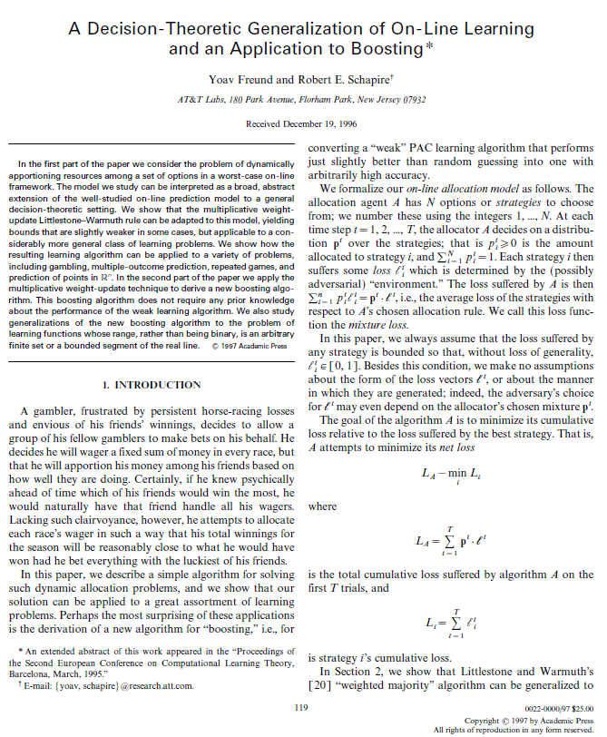
- algorithm in pseudocode
- uses “Weak Learners”
- applies to piecewise linear functions (such as decision trees)
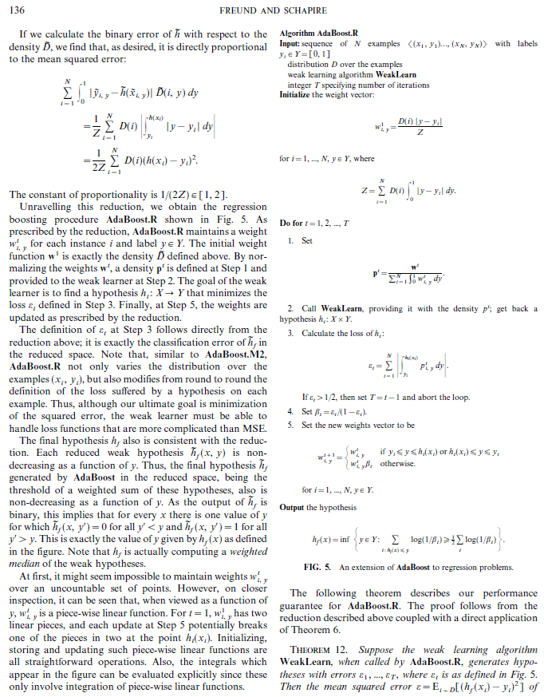
- each “weak learner” is, later, a “stump” (a decision tree of depth one)
- errors from each stump is used in the calculation for the weight of the next stump
- one variable at a time
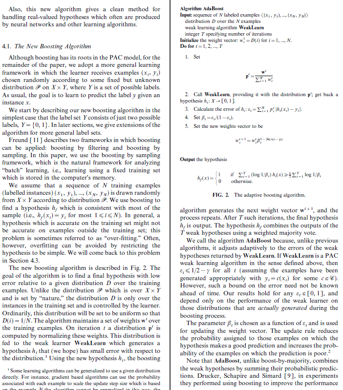
Not only does this process small errors after the creation of many trees (on the training data), the theorems allow us to estimate the generalization error (on the test data)
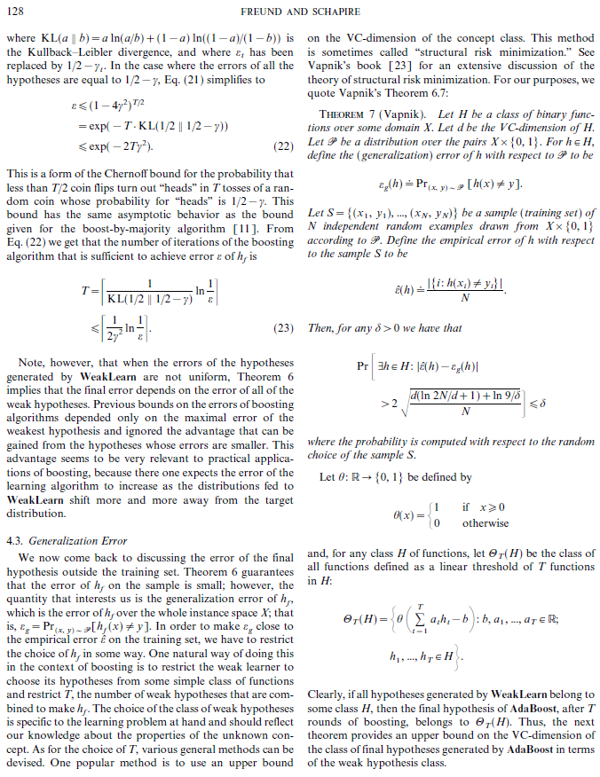
Ethics Enclave: Image Alterations
Ramirez told the Review that he initially “found it hilarious” that the school had used AI to change the photo. “But after looking at the comparison, I was also upset because I don’t agree with Stanford making those choices about how we were represented,” he said.
WarningDCP3
XGBoost (2016)
- emphasis on sparse-aware and scalable boosting
- improving upon previous boosting techniques such as Gradient Boosting Machine (GBM)
- paper by Tianqi Chen and Carlos Guestrin (2016)
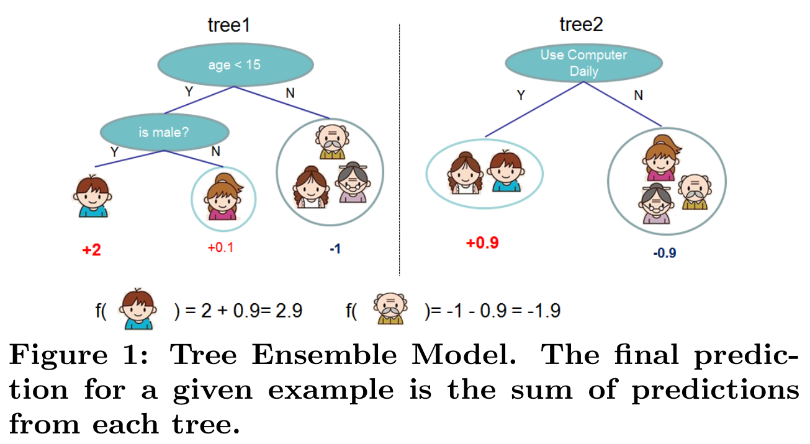
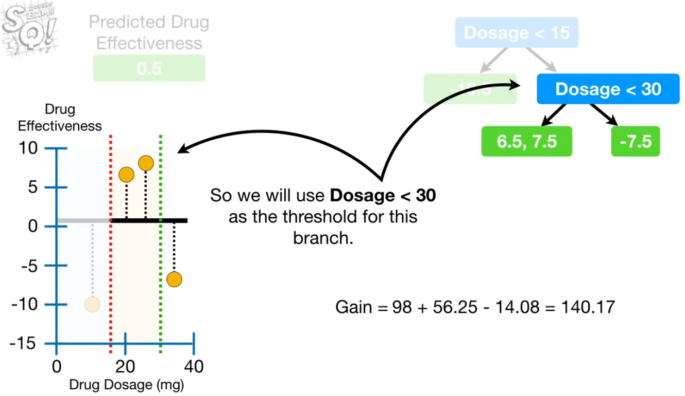
- metrics: gain/similarity for regression/classification
- multiple penalization parameters to prune trees
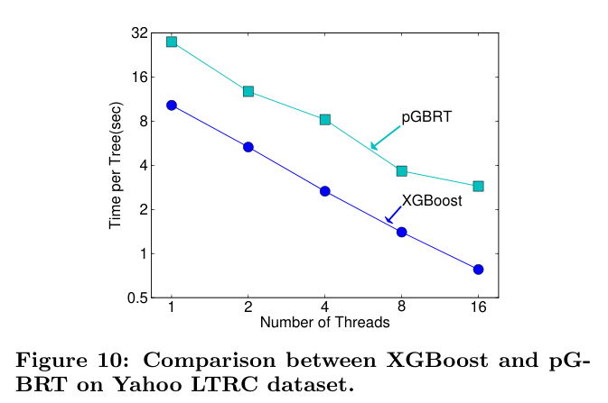
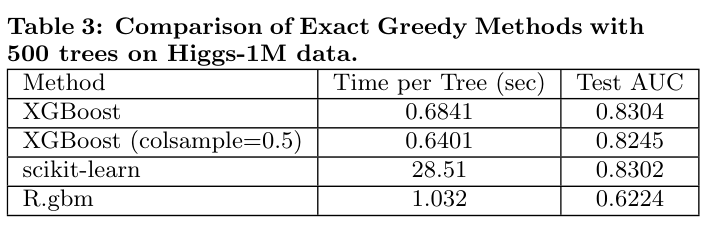
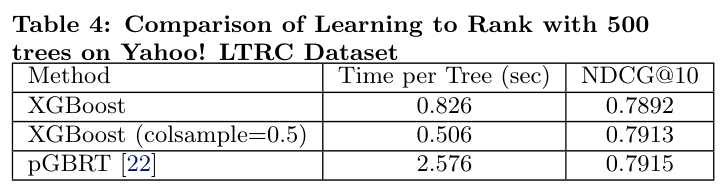
- Showed that decision trees can be used on big data sets
- Still used by researchers today
TipPaper Advice
- Follow the article type and journal format specifications closely
- Ensure that key aspects of the study are simply laid out and easy to find.
- Write the paper as a clear, sensical story that reviewers can follow easily.
- Don’t be afraid to state the study’s limitations.
- Design figures to help explain complicated concepts.
— “Think Like a Reviewer” by Dr Miriam Segura, editor-in-chief of CBE-Life
SHAP Values
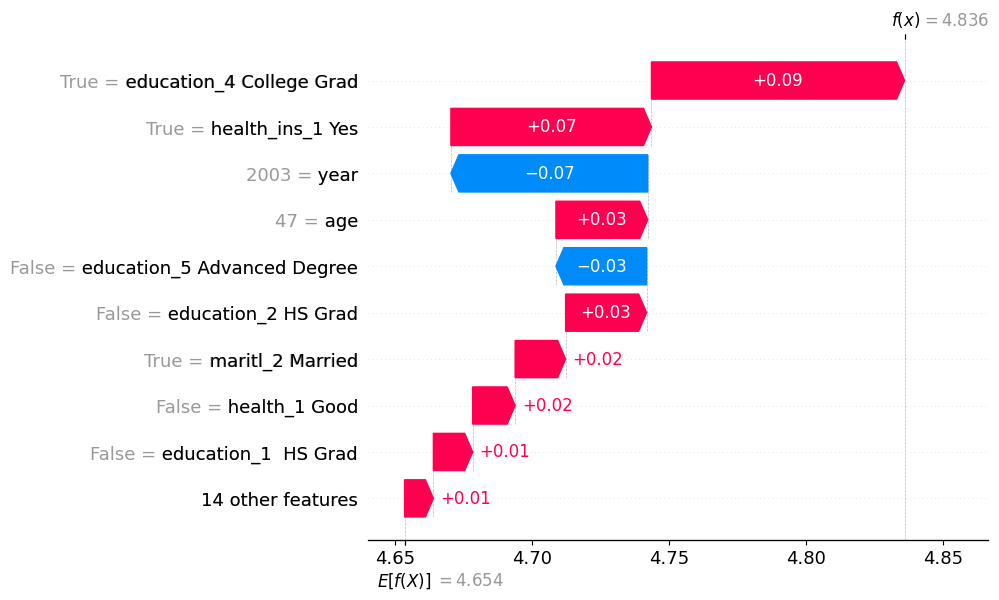
Quo Vadimus?
due this Friday:
- Precept 4
- Team Charter
Midsemester Project
due Oct 9:
- Precept 5
- Slides as Outline
due Oct 16:
- Report
- Poster
- Video
Footnotes
Note(optional) Additional Resources and References
- Bagging vs Boosting by Roshmita Dey
- XGBoost
NoteSession Info
sessionInfo()R version 4.6.1 (2026-06-24 ucrt)
Platform: x86_64-w64-mingw32/x64
Running under: Windows 10 x64 (build 19045)
Matrix products: default
LAPACK version 3.12.1
locale:
[1] LC_COLLATE=English_United States.utf8
[2] LC_CTYPE=English_United States.utf8
[3] LC_MONETARY=English_United States.utf8
[4] LC_NUMERIC=C
[5] LC_TIME=English_United States.utf8
time zone: America/New_York
tzcode source: internal
attached base packages:
[1] stats graphics grDevices utils datasets methods base
other attached packages:
[1] lubridate_1.9.5 forcats_1.0.1 stringr_1.6.0
[4] dplyr_1.2.1 purrr_1.2.2 readr_2.2.0
[7] tidyr_1.3.2 tibble_3.3.1 ggplot2_4.0.3
[10] tidyverse_2.0.0 palmerpenguins_0.1.1 gt_1.3.0
loaded via a namespace (and not attached):
[1] gtable_0.3.6 jsonlite_2.0.0 compiler_4.6.1 tidyselect_1.2.1
[5] xml2_1.6.0 scales_1.4.0 yaml_2.3.12 fastmap_1.2.0
[9] R6_2.6.1 generics_0.1.4 knitr_1.51 htmlwidgets_1.6.4
[13] tzdb_0.5.0 pillar_1.11.1 RColorBrewer_1.1-3 rlang_1.2.0
[17] stringi_1.8.7 xfun_0.57 sass_0.4.10 fs_2.1.0
[21] S7_0.2.2 otel_0.2.0 timechange_0.4.0 cli_3.6.6
[25] withr_3.0.3 magrittr_2.0.5 digest_0.6.39 grid_4.6.1
[29] rstudioapi_0.19.0 hms_1.1.4 lifecycle_1.0.5 vctrs_0.7.3
[33] evaluate_1.0.5 glue_1.8.1 farver_2.1.2 rmarkdown_2.31
[37] tools_4.6.1 pkgconfig_2.0.3 htmltools_0.5.9